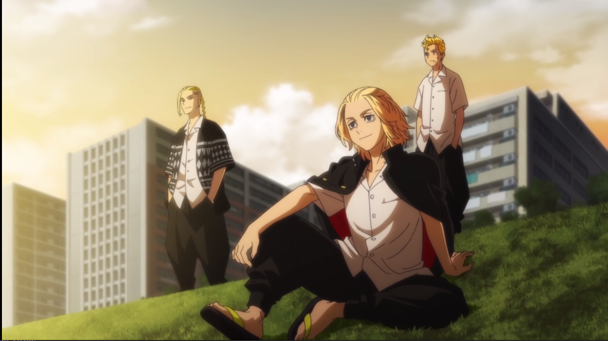
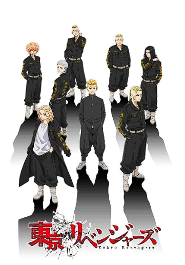

- Chainsaw man
- Tokyo Revengers
- Jujutsu Kaisen
- Spy X Family
- Attack On Titan
- Demon Slayer
- Black Clover
- Fullmetal Alchemist
- My Hero Academia
- Naruto: Shippuden


Takemichi Hanagaki learns that his ex-girlfriend Hinata Tachibana was murdered.
He suddenly finds himself travelling through time to his middle school
years and has the chance to change the events of the future and save her life.
He also aims to rise to the top along the hiearchy of the most violent delinquent
gang known as the Tokyo Manjikai.
TOKYO REVENGERS